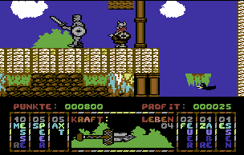

Frodo
Dieser Artikel wurde für die folgenden Ubuntu-Versionen getestet:
Ubuntu 14.04 Trusty Tahr
Zum Verständnis dieses Artikels sind folgende Seiten hilfreich:
Der Commodore 64 ist einer der beliebtesten Heimcomputer der 80er und sogar 90er Jahre gewesen. Viele Nutzer hatten damit ihren Einstieg in die Computerwelt und denken manchmal nostalgisch an diese Zeit zurück. Für den Fall, dass man seinen alten "Brotkasten", wie der C64 früher genannt wurde, nicht vom Dachboden holen will, kann man die meisten Spiele und Anwendungen auch unter Ubuntu emulieren. Auf dieser Seite werden Emulatoren vorgestellt, mit den man die C64-Diskettenimages laden kann. Frodo  ist ein freier C64-Emulator, der auch unter Unix-Systemen lauffähig ist.
ist ein freier C64-Emulator, der auch unter Unix-Systemen lauffähig ist.
 |
| Frodo |
Installation¶
Man lädt sich von der Homepage die Datei FrodoVERSION.Src.tar.gz herunter und entpackt diese [5]. Darin befindet sich Quellcode, den man kompilieren muss. Dazu muss man zuerst die Pakete
libsvga1-dev (universe [2] )
libsdl1.2-dev
 mit apturl
mit apturl
Paketliste zum Kopieren:
sudo apt-get install libsvga1-dev libsdl1.2-dev
sudo aptitude install libsvga1-dev libsdl1.2-dev
installieren [1].
Danach öffnet man ein Terminal [3] und bewegt sich in den Ordner Src im entpackten Verzeichnis. Hier kompiliert [4] man das Programm - der letzte Schritt "make install" bzw. "checkinstall" fällt weg, da es nicht vorgesehen ist, das Programm zu installieren.
Damit das Programm startet, müssen sich die ROM-Dateien im selben Verzeichnis wie die Binärdateien befinden. Das heißt, die Dateien
1541 ROM
Basic ROM
Char ROM
Kernal ROM
müssen ggf. noch aus dem Hauptordner umkopiert werden. (Oder man kopiert das erstellte Binärfile in den Hauptorder.)
Um das Einstellungsfenster nutzen zu können, muss das Paket
tk8.4
mit apturl
Paketliste zum Kopieren:
sudo apt-get install tk8.4
sudo aptitude install tk8.4
installiert [1] sein. Zusätzlich muss auch die Datei TkGui.tcl im selben Ordner wie die Binärdatei liegen.
Jetzt kann man das Programm im Terminal [3] per
./Frodo
starten. Komfortabler ist es einen eigenen Starter anzulegen. Zuerst wird das Programm verschoben [3]:
sudo mv Frodo-Version /opt/Frodo #verschiebt den Programmordner nach /opt
Nun mittels eines Editors [8] ein Skript anlegen:
1 2 3 | #!/bin/bash cd /opt/Frodo ./Frodo |
Dieses unter dem Namen Frodo oder Frodo.sh abspeichern und ausführbar machen [9].
sudo mv Frodo /usr/local/bin #verschiebt das Skript - ggf. Frodo.sh verwenden
Das Programm kann über Frodo oder Frodo.sh gestartet [6] und ggf. dem Menü [7] hinzugefügt werden.
Eine Anleitung zu Frodo befindet sich im entpackten Verzeichnis unter Docs/Main.html bzw. file:///opt/Frodo/Docs/Main.html
| Einstellungen |
Einstellungen¶
Bevor man ein Spiel lädt, sollte man noch einige Einstellungen machen (Das Einstellungsfester öffnet sich automatisch, wenn man Frodo startet.):
Hier gibt man das Verzeichnis oder die Image-Datei für die Diskette an, die meistens im Format D64 oder T64 vorliegen. Mittels einem Klick auf einen der Knöpfe oder per Doppelklick in das Eingabefeld kann man ein Verzeichnis/Datei auswählen.
Die vier verfügbaren Laufwerke sind dabei durchgehend von 8 bis 11 nummeriert.Mittels des Knopfes "Show/Hide Advanced Options" kann man die erweiterten Optionen aufrufen.
Wichtig ist, dass man "Limit Speed" aktiviert. Ansonsten haben die Leertaste oder Backspace eine zu hohe Wiederholrate und man kann nicht vernünftig tippen.
Als zweiten Punkt sollte man bei "SID Emulation" von "None" auf "Digital" stellen, soweit möglich. Ansonsten hat man nämlich keinen Ton.
Ein Spiel starten¶
Möchte man ein Spiel starten, bindet man zuerst das Diskettenimage im Einstellungsfenster (siehe oben) ein, lädt danach den Inhalt der Diskette mit
LOAD "$" ,8 LIST
und lädt/startet das Programm über
LOAD "DATEINAME",8,1 RUN
Probleme¶
Das Tastaturlayout ist leider nicht optimal. So ist es nicht möglich gewesen, ein deutsches Tastaturlayout einzubinden oder überhaupt manche Sonderzeichen wie * oder - zu benutzen. Das führt dazu, dass man einen Umweg gehen muss, wenn man ein Spiel laden will:
Man lädt den Inhalt und zeigt ihn wie oben an.
Danach bewegt man den Cursor in die gewünschte Zeile mit dem Programm und gibt dort vorne das "LOAD" ein.
Nach den Anführungszeichen am Ende der Zeile tippt man das ",8,1" ein. Auf diese Art kann man das Spiel laden.
Auf Systemen mit Notebooktastaturen (das schließt Notebooks mit ein), kann es sein, dass die Cursortasten nicht reagieren. Leider wurden die Pfeiltasten auf den Nummerblock der Tastatur gemappt, der bei Notebooktastaturen nur per Fn erreichbar ist. In manchen Fällen kann man ein Spiel so bedienen, in anderen wiederum funktioniert das leider gar nicht. Hier ist dann eine anderen "vollwertige" Tastatur oder ein Joystick empfohlen.
Workaround¶
Den Nummernblock des Notebooks, z.B. mit Fn + F11 , aktivieren. Somit kann man mittels der folgenden Tastenbelegungen zumindest ein Spiel starten:
| Tastenkürzel | |
| Tasten | Bedeutung |
| ⇧ + J oder ⇧ + K oder ⇧ + L | LOAD"*",8,1 + RUN |
|  | ||
| Turrican 3 | Hägar, der Schreckliche | Kikstart 2 |
Spielelinks¶
Einige Spielehersteller haben ihre Spiele (oder zumindest einen Teil davon) frei gegeben, so dass andere Spieleseiten sie zum Download anbieten dürfen. Von sogenannten Abandonware-Seiten sollte man Abstand nehmen, da das Herunterladen meist illegal ist. Die Spiele sind hier immer noch urheberrechtlich geschützt.
Commodore 64 Heaven
- Viele Infos um den C64 und einige Spiele zum Download Solftwolves' Commodore eight bit computer page
- Images von PublicDomain-SoftwareGremlin Graphic World
- Freie Spiele der Firma Gremlin
Achtung!
Man darf die Diskettenimages nur herunterladen und nutzen, wenn man in Besitz des Originalspiels ist, da die meisten Spiele immer noch urheberrechtlich geschützt sind. In manchen Fällen sind bestimmte Spiele auch freigegeben, um sie nutzen zu können (siehe Links). Alle Spiele, von denen Screenshots gezeigt werden, sind frei auf den genannten Seiten erhältlich.

- Erstellt mit Inyoka
-
 2004 – 2017 ubuntuusers.de • Einige Rechte vorbehalten
2004 – 2017 ubuntuusers.de • Einige Rechte vorbehalten
Lizenz • Kontakt • Datenschutz • Impressum • Serverstatus -
Serverhousing gespendet von